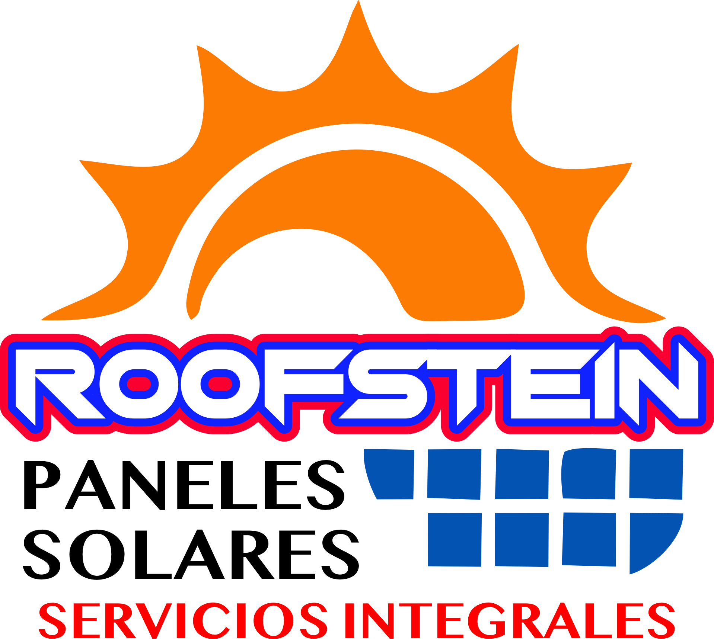

Energía Solar: El Futuro Está en Tus Manos
Los paneles solares son mucho más que una tendencia ecológica: son una revolución energética que está cambiando la manera en que vivimos. Aprovechan la luz del sol —una fuente limpia, inagotable y gratuita— para generar electricidad y reducir nuestra dependencia de los combustibles fósiles. Instalar paneles solares en tu hogar o negocio no solo te hace parte del cambio, sino que también te ayuda a ahorrar, aumentar el valor de tu propiedad y cuidar el planeta al mismo tiempo.

¿Por qué elegir energía solar?
- Ahorro en el recibo
- Reduce o incluso elimina tu recibo de luz. La energía del sol es 100% gratuita.
- Retorno de la inversion a mediano plazo
- Aunque la inversión inicial puede parecer alta, se recupera en pocos años con el ahorro mensual.
- Aumenta el valor de tu propiedad
- Aunque la inversión inicial puede parecer alta, se recupera en pocos años con el ahorro mensual.

¿Por qué elegir energía solar?
- Mantenimiento minimo
- Los paneles solares modernos requieren muy poco mantenimiento y tienen una vida útil de más de 25 años.
- Independencia energetica
- Genera tu propia electricidad y protege tu hogar de las subidas de precios de la luz.
- Aumenta el valor de tu propiedad
- Aunque la inversión inicial puede parecer alta, se recupera en pocos años con el ahorro mensual.